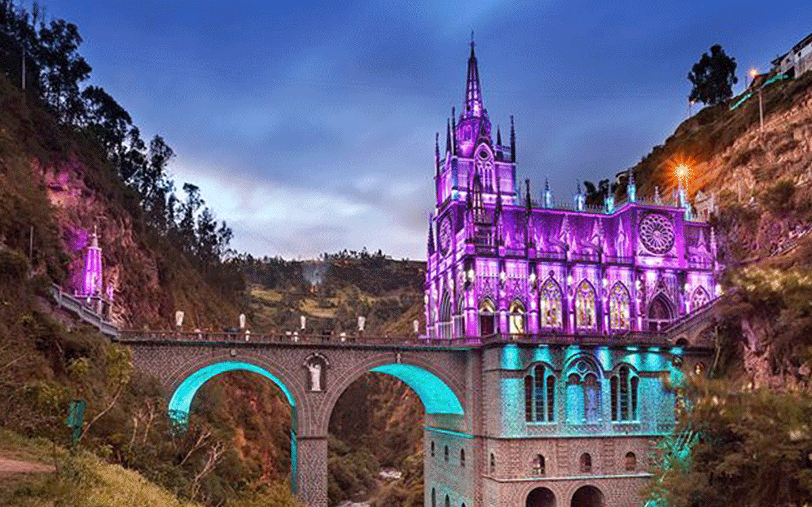

SANTUARIO DE
LAS LAJAS
Actualmente, para llegar al santuario es necesario recorrer 4 kilómetros en vehículo desde Ipiales, pero con el teleférico estos se reducirán a 1,3 kilómetros. Con esta obra se busca impulsar el turismo en la que es considerada una de las más importantes joyas arquitectónicas y religiosas de Colombia.

SANTUARIO DE
LAS LAJAS
La iglesia del santuario de Nuestra Señora de las Lajas, en Ipiales (Nariño), es la más hermosa del mundo. El reconocimiento lo hizo el diario británico 'The Telegraph', uno de los más prestigiosos de Europa, que elaboró un listado con las 23 iglesias más bellas del planeta.
